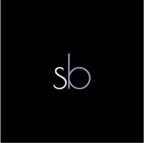
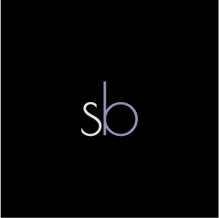
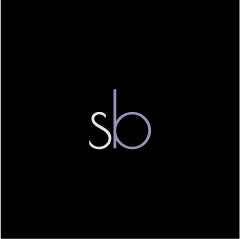
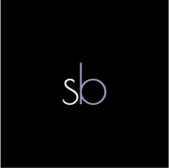

I was given an assignment to create a poster for a concert of some kind. I decided to create a poster for a Jazz festival, since I had the idea in mind to use a large instrument as an outline of some sort. With only an image of a cello, Adobe Illustrator, and a little bit of research, this was my result.
During my early college course days, I was given the assignment to recreate a landing page using Adobe Photoshop. With my love for colors, flowers, and all things lively, I chose to create a landing page for Longwood Gardens.
In an Adobe Illustrator course I had taken, we were given the assignment to create a personal logo. It was meant to represent us and our style of work, and this project definitely shows one of the best representations of that. With my love for elegance and color, along with my perfectionism, I don't think I could have come up with a better solution.
This assignment, a building cutaway, was done completely in Adobe Illustrator. Every line was created with the pen tool, the brick pattern was all done by hand, and the gradients were all carefully positioned to create this beautiful church scene. Although it was very time consuming and frustrating, I was very pleased with the result.